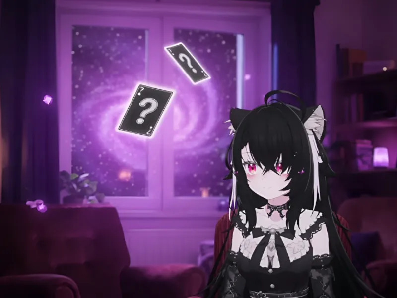

Deep Talk Cards · VRChat 话题世界
一个通过抽取问题来聊天的 VRChat 世界。806 个问题分为闲聊、过往、思辨和亲密四类，可以和朋友一起选择适合的话题。

Deep Talk Cards 原本是萝北送给一对情侣朋友的生日礼物，后来开放给其他玩家使用。它提供一个可以坐下来聊天的房间，以及四类不同的问题。朋友聚在一起却不知道从哪里聊起时，可以抽一道题作为开头。
玩家通过房间里的道具抽取话题，抽到的问题会同步给同一房间的人。咖啡杯对应闲聊，书本对应过往，水晶球对应思辨，天球仪对应亲密。可以根据彼此的熟悉程度选择类别，不需要按固定顺序进行。
题目涉及日常习惯、过去的经历、对事情的看法和亲密关系。例如，闲聊中有「你买过最没用但最喜欢的东西是什么」，过往中有「有什么事是你今天能做到，但一年前还做不到的？」。回答之后，可以继续聊相关的经历，不必急着抽下一题。
这里没有大冒险任务。问题只是聊天的参考，每个人都可以决定是否回答、说到什么程度。不想回答的题可以跳过，也应尊重其他人不愿继续的话题。
从生活习惯、喜好和有趣的假设开始，适合还不太熟悉，或者想轻松聊天的时候。
围绕成长和个人经历展开，可以借着一个问题说起平时不容易提到的事情。
讨论选择、价值观和不同观点。彼此可以有不同答案，不需要说服对方。
涉及感受和关系中的需要，更适合已经有一定信任的人。是否回答由参与者自己决定。
支持简体中文、繁体中文、英语、日语和韩语，每位玩家可以选择自己的显示语言。非中文语系的题目由 AI 翻译。
支持 PCVR 和 Quest。进入后可以邀请朋友一起抽题，也可以先看看不同类别的问题。
🍊